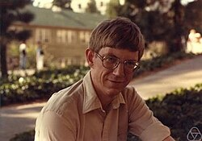

Iain Murray Johnstone | |
|---|---|
 Iain M. Johnstone | |
| Born | 1956 (age 69–70) |
| Alma mater | Australian National University, Cornell University |
| Awards | Guy Medal (Silver, 2010) (Bronze, 1995) COPSS Presidents' Award (1995) |
| Scientific career | |
| Fields | Statistics |
| Institutions | Stanford University |
| Lawrence D. Brown | |
Doctoral students | Naomi Altman, Chitra Lele, Mark Matthews, Sudeshna Adak, Arthur Lu, Noureddine El Karoui, Debashis Paul, Zongming Ma, Gourab Mukherjee, Zhou Fan, Jeha Yang, Damian Pavlyshyn |
Iain Murray Johnstone (born 1956)[1] is an Australian born statistician who is the Marjorie Mhoon Fair Professor in Quantitative Science in the Department of Statistics at Stanford University.
Johnstone was born in Melbourne in 1956. In 1977 he graduated in mathematics at the Australian National University, specializing in pure mathematics and statistics.[2][3] Later he obtained an M.S. and a Ph.D. in statistics from Cornell University in 1981 under Lawrence D. Brown with the dissertation titled, Admissible Estimation of Poisson Means, Birth–Death Processes and Discrete Dirichlet Problems.[4]
In the 1990s, he was known for applications of wavelet methods for noise reduction in signal and image processing, and turned them in statistical decision theory. In the 2000s he turned to the theory of random matrices in multidimensional problems of statistics. In Biostatistics he cooperated with medical professionals in the application of statistical methods, particularly in cardiology and in prostate cancer.
He joined the Department of Statistics, Stanford University after completion of his Ph.D. in 1981. He is the Marjorie Mhoon Fair Professor in Quantitative Science in the Department of Statistics at Stanford University.[5]
He was a Guggenheim Fellow[6] and Sloan Fellow.[5] He was president of the Institute of Mathematical Statistics. He received the Guy Medal in Bronze 1995 and again in Silver 2010 from the Royal Statistical Society and the 1995 COPSS Presidents' Award.[7] In 1998 he was an Invited Speaker of the International Congress of Mathematicians in Berlin.[8] He is a member of the American Academy of Arts and Sciences and the National Academy of Sciences. He is a fellow of the American Statistical Association, the Institute for Mathematical Statistics and the American Association for the Advancement of Science.
{{cite web}}: CS1 maint: deprecated archival service (link)
{kind=link}